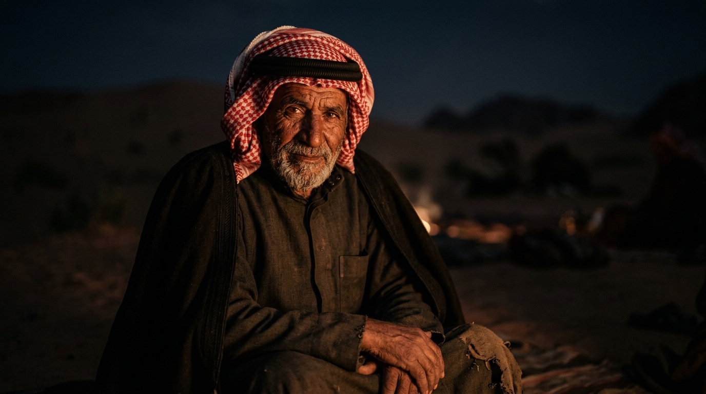
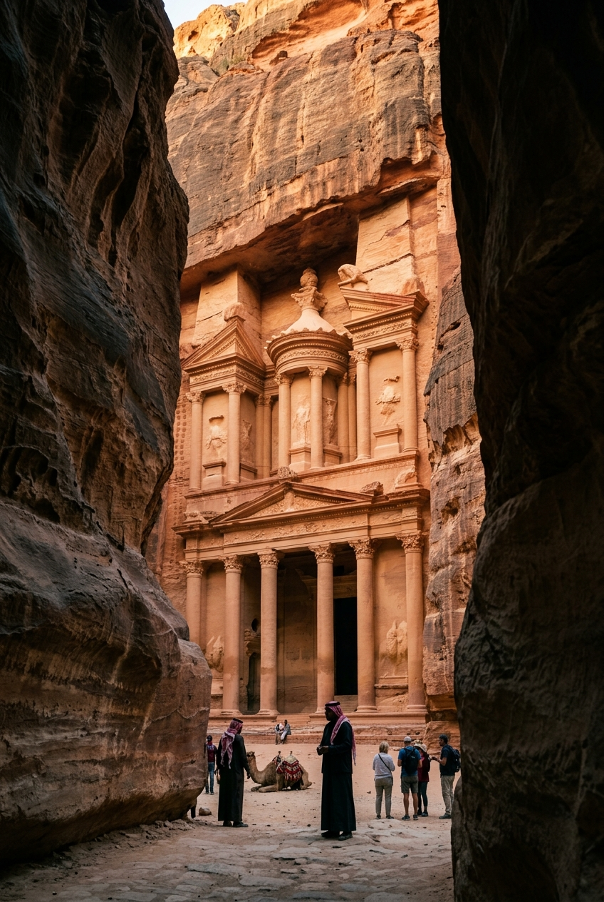
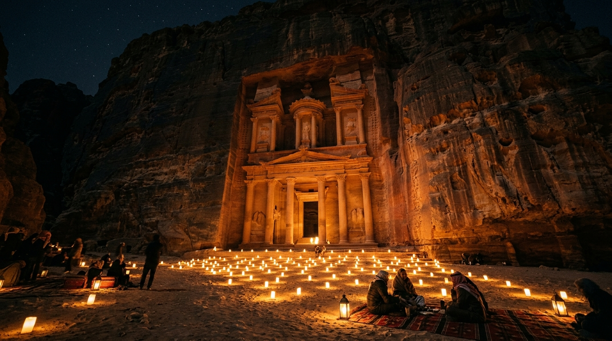
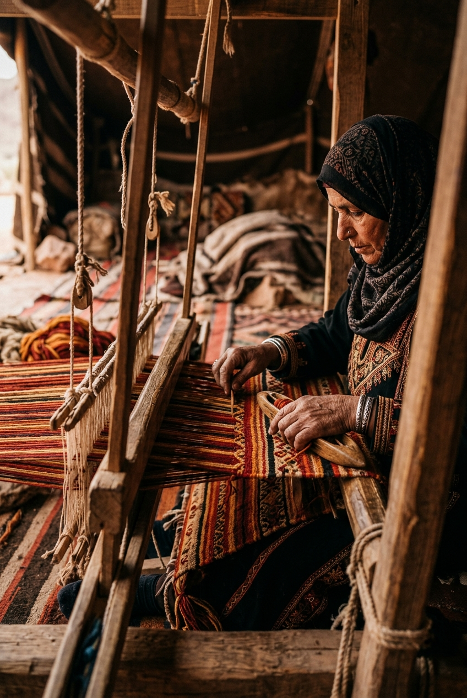
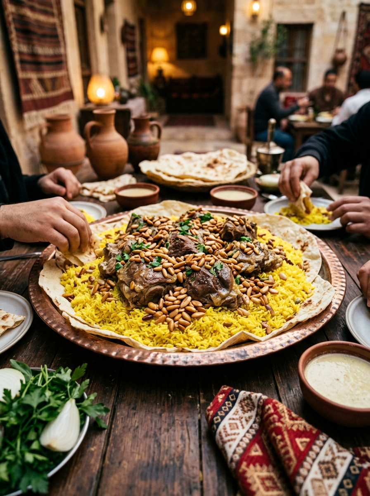
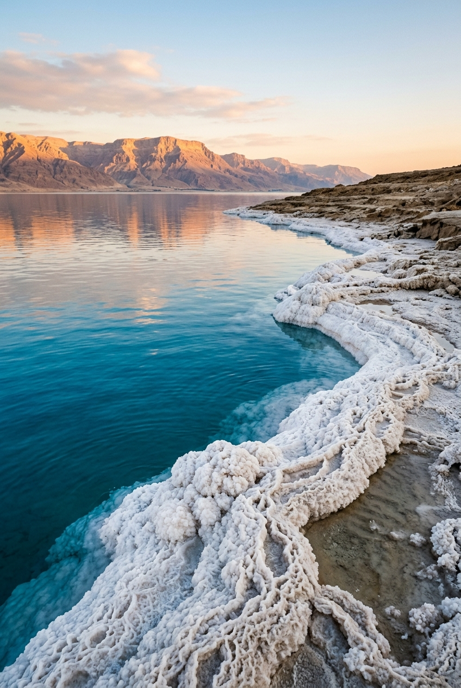
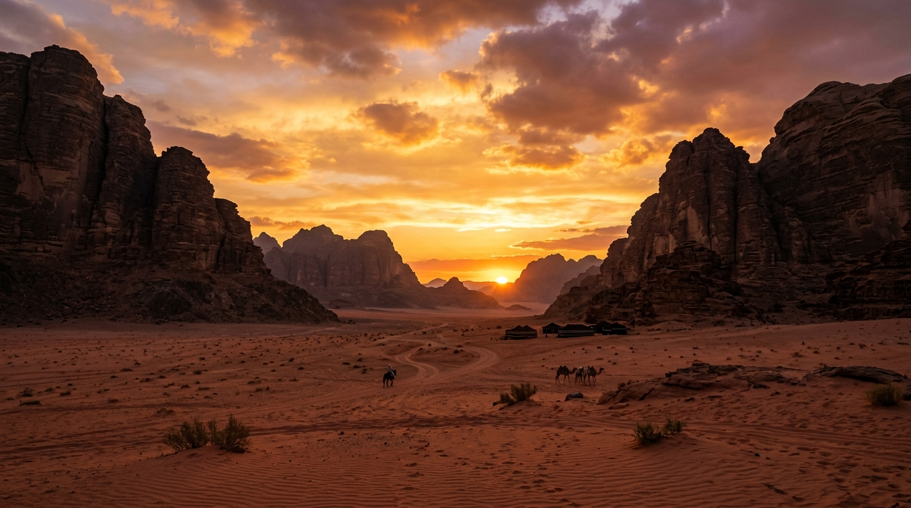
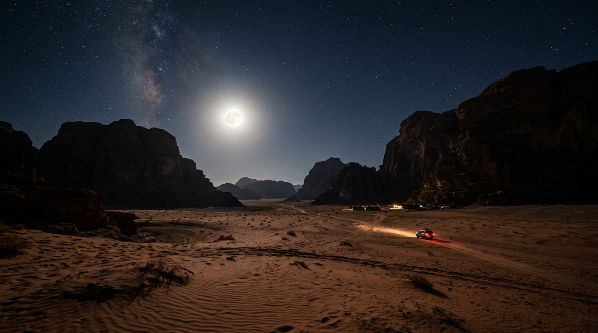
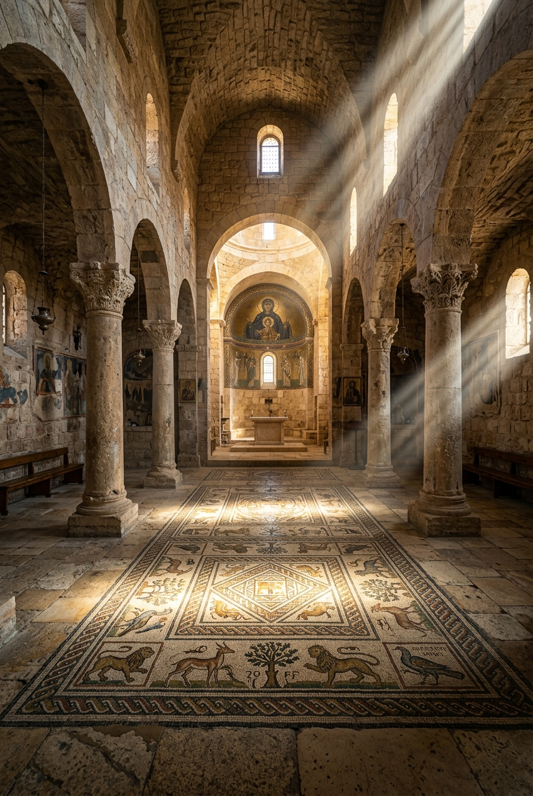

Explore places, stories, culture, and heritage through one connected journey.
From ancient cities to landscapes shaped by time.
Petra was shaped by the Nabataeans, who carved temples, tombs, and pathways directly into rose-red sandstone. Entering through the Siq reveals a city where craft, trade, and memory remain embedded in the land.
Beyond its monuments, Petra carries the stories of people who crossed the desert and made this place a meeting point of cultures. Its enduring silence is part of its power.
More than just a dish, Mansaf is a symbol of Jordanian hospitality and generosity. Made with tender lamb cooked in fermented dried yogurt (jameed), it brings families and communities together in celebration and respect.
The red and white checkered Shemagh is a proud emblem of Jordanian heritage. Beyond protecting against the harsh desert climate, its unique tasseled edges (hadab) signify prestige, honor, and a deep connection to Bedouin roots.
Jordanian embroidery (Tatreez) is a rich visual language. Every cross-stitch pattern, color palette, and motif tells a story of the woman's region, social status, and family history, preserving ancient traditions stitch by stitch.
Plan your journey across Jordan with perfect timing.
Essential local apps to navigate Jordan with ease.
The most popular food delivery platform in Jordan. Order authentic local cuisine directly to your location.
Download AppA trusted local ride-hailing service. Safe, reliable, and the easiest way to navigate inside the city.
Download AppPremium intercity bus travel. The most comfortable and affordable way to travel between Amman, Petra, and Aqaba.
Download AppNavigate the capital like a local. Track routes and schedules for Amman's modern public transit network.
Download AppExplore Jordan at your own pace. Reliable, top-rated local car rentals for your desert highway road trips.
Download App







